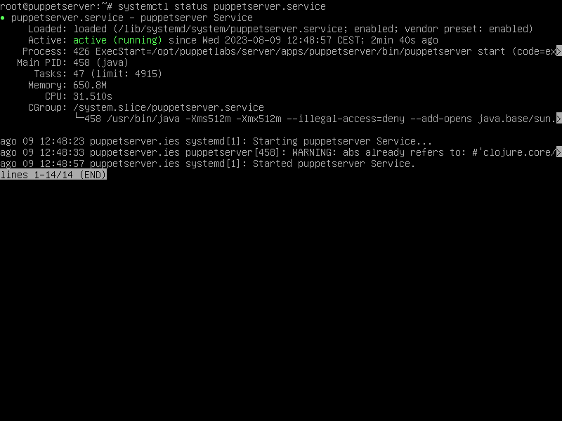
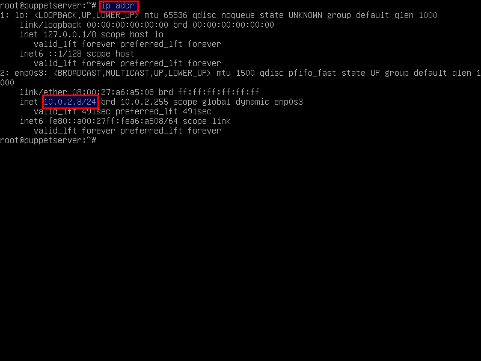

Iniciar el servidor puppet
Inicia la máquina virtual puppetserver.
Recuerda que el usuario administrador es root y su contraseña linex.
Abre un terminal y ejecuta el comando "systemctl status puppetserver" para comprobar que el servidor puppet está corriendo:

Si tienes algún problema, ponte en contacto con tu tutor, envíale una captura de pantalla y coméntale el problema.
Comprueba cuál es la IP del servidor puppetserver ejecutando el comando "ip addr":

En este ejemplo, la dirección IP de la máquina virtual es 10.0.2.8.
Toma nota de la dirección IP que tiene tu servidor puppet.
A continuación, vamos a realizar algunas prácticas de instalación y desinstalación de paquetes mediante puppet. Así que no apaguéis la máquina virtual puppetserver.